日常生活中经常碰到计算天数、计算日期、计算星期几的问题。这就需要孩子能够认识月历上的年、月、日，能够运用月历进行日期推算，能够知道一个星期有7天，能够掌握日期和星期的对应关系。
月历的认知是基本的生活技能，对5～7岁的孩子，家长可以逐步建立他们的月历和星期的概念，让孩子看看家里的月历，培养孩子的兴趣，为将来上小学打下良好的基础。
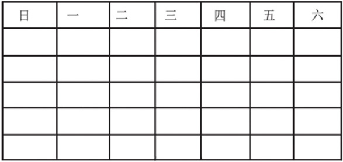
典型例题 1 仔细看2019年某月的月历，回答下面的问题。
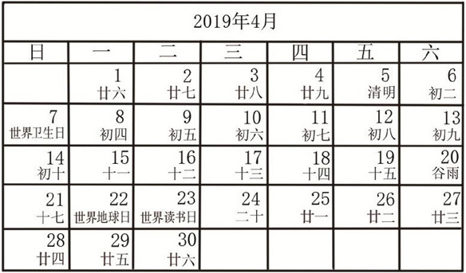
（1）这是（ ）月的月历，这个月一共有（ ）天。
（2）这个月有（ ）天是星期日，有（ ）天是星期六。
（3）这个月的第3个星期六是（ ）日。
（1）每个月都从1日开始，不同月份的天数不一样，从上图的月历上看，这是4月的月历，月历上显示的是30天。
（2）“日”所在列，表示星期日对应的日期，一共有4个日期，所以有4天是星期日；“六”所在列，表示星期六对应的日期，一共有4个日期，所以有4天是星期六。
（3）这个月的第3个星期六是“六”所在列的日期从上往下数第3个，是4月20日。
典型例题 2 仔细观察2019年12月的月历，回答下面的问题。
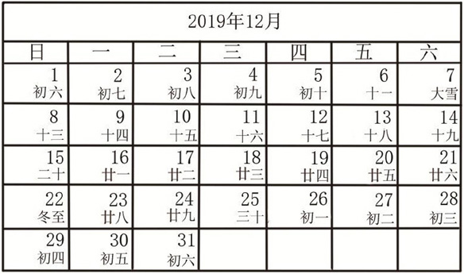
（1）12月有（ ）个星期五，第2个星期五是（ ）日。
（2）如果今天是12月的第3个星期二，那么明天是（ ）日，昨天是（ ）日。
（3）如果爸爸12月9日早上出差了，12月14日早上回来了，爸爸出差了（ ）天。
（1）12月一共有31天，“五”所在列一共有4个日期，说明12月一共有4个星期五，第2个星期五是12月13日。
（2）12月有5个星期二，第3个星期二是12月17日，明天是今天后面的一天，所以是12月18日，昨天是今天前面的一天，所以是12月16日。
（3）根据爸爸12月9日早上出差，12月14日早上回来的题目信息，绘制如下的射线图，图中日期间的间隔就是爸爸出差的天数。
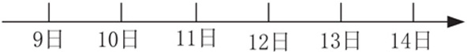
射线图中一共有5个间隔，所以爸爸出差了5天。
当然，天数的计算也可以通过数月历表中的日期来完成，9日到14日要经过5天。
典型例题 3 如果2019年的7月1日是星期二，你能编出2019年7月的月历吗？
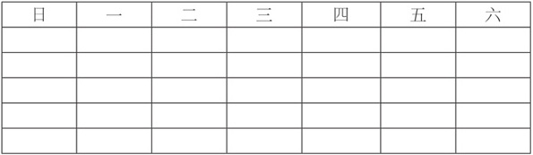
由于7月1日是星期二，7月的月历就从“二”所在列的第一行开始，7月有31天，所以7月的月历如下表所示。
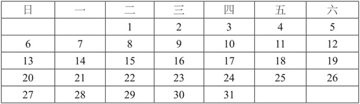
典型例题 4 如果2019年5月13日是星期二，那么2019年5月18日是星期几？
该题可以使用月历来推算。
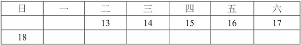
从月历可以看出，5月18日是星期日。
当然本题也可以使用射线图来解决。
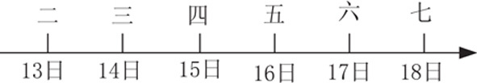
遇到天数间隔比较多的题目，也可以用计算方法来解决，计算分为2步。
第1步是使用起始日期连续加上7，直到新的起始日期与截止日期的差小于7。
第2步是把连续相加后的日期作为起始日期，根据截止日期来推算其是星期几。
典型例题 5 如果2019年8月2日是星期六，那么2019年8月28日是星期几？
显然，上面的题目，如果用月历和射线图来推算，比较麻烦，我们采用计算和月历相结合的方法。
重新设定起始日期：2+7+7+7=23，也就是说2019年的8月23日也是星期六。以2019年8月23日为起始日期，用月历推算2019年8月28日是星期几。
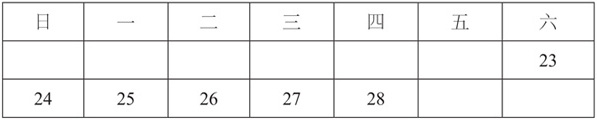
从月历可以看出来，2019年8月28日是星期四。
1.仔细看2019年某月的月历，回答下面的问题。
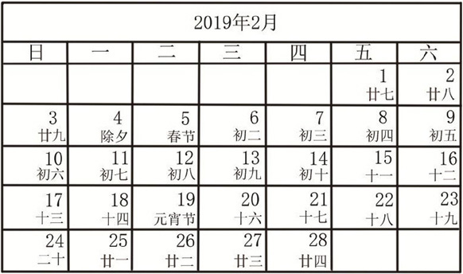
（1）这是（ ）月的月历，这个月一共有（ ）天。
（2）这个月有（ ）天是星期日，有（ ）天是星期六。
（3）这个月的第4个星期日是（ ）日。
2.仔细观察2019年10月的月历，回答下面的问题。
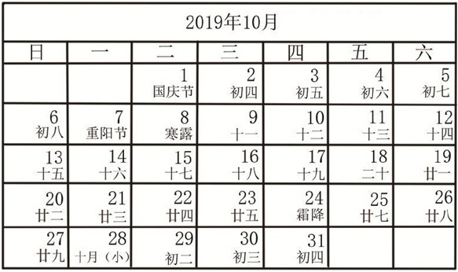
（1）10月有（ ）个星期二，第2个星期二是（ ）日；
（2）如果今天是10月的第5个星期四，那么明天是（ ）日，昨天是（ ）日；
（3）2019年的国庆节是星期（ ）；
（4）如果爸爸10月9日早上出差了，出差了整6天，爸爸应该（ ）日回来。
3.如果2019年1月1日是星期三，你能编出2019年1月的月历吗？
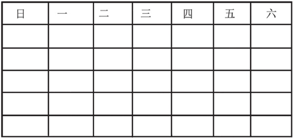
4.如果2019年11月18日是星期二，那么2019年11月12日是星期几？
5.如果2019年4月3日是星期四，那么2019年4月30日是星期几？